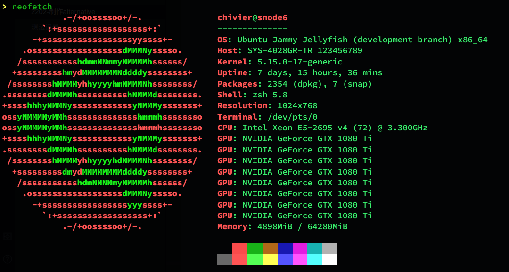
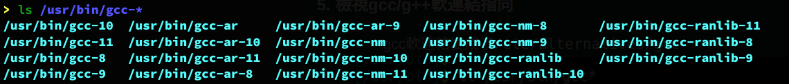
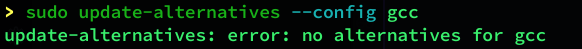
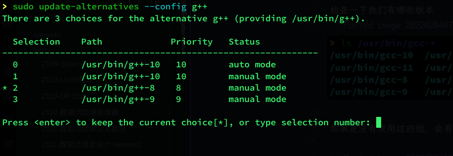

2202-制作alternative
在做各种编译环境的时候，我们经常遇到这么一个问题: 我们的编译器需要调整到特定的版本，例如 gcc-4 或者 g++-8。
但是我们使用的时候往往不会去刻意用额外的 CC=xxx CXX=xxx 之类的前缀，在网上 copy 命令的时候也非常容易忘记这件事情。
为此，Linux 中有一个 alternative 机制可以保证这一点从容灵活。这里做一个简单的介绍。
实验环境
本次实验在 ACSA-snode6 机器上进行：

机器环境由于不小心作大死变成了过高版本的 ubuntu 。不过问题不大，内核新一点也不算是坏事。
使用命令：
1 | |
检查一下我们有哪些版本

如果是没有使用过的组，会有下面的这种情况：
但是这个不重要，使用：
1 | |
其中最后一个数字代表 alternative 的优先级，我个人建议直接和版本好进行相关的对应联系起来，方便记忆。
类似的方法，把各个版本的 gcc 和 g++ 依次安装上来。之后再去使用 update-alternative 就可以看到如下的效果：
选择需要的版本即可。
2202-制作alternative
https://chivier.github.io/2022/02/04/2022/2202-制作alternative/